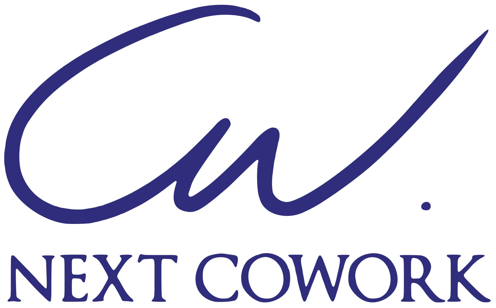

그 회사의 실제 업무로 커리큘럼을 짜고, 교육이 끝나면 팀이 그대로 가져갈 산출물을 남깁니다. 세 가지 프로그램을 같은 기준으로 비교했습니다.
| AI 실무활용 특강150만원부터 | 실무 워크샵300만원부터 | 사내 AI 캠퍼스 구축2,000만원부터 | |
|---|---|---|---|
| 이런 상황에 | 전 직원이 AI를 ‘한 번은 제대로’ 접해야 할 때, 도입 전 공감대가 필요할 때 | 한 부서·팀의 실제 업무를 교육 안에서 바꾸고 싶을 때 | 교육을 한 번 받는 것이 아니라 조직에 AI 학습 체계를 남기고 싶을 때 |
| 받는 산출물 | 당일 실습으로 만든 내 업무용 프롬프트, 강의자료·실습 프롬프트 킷 | 부서별 실제 업무 자동화 3건, 워크샵 후 30일 질의 팔로업 | 진단 리포트, 내부 활용 가이드, 만족도·현업적용도 설문 리포트, 수료증, 업무 자동화 3건 |
| 포함 | AI 시대의 업무 변화, 대표 활용 사례, 프롬프트 기본기, 문서 작성 실습(사전 설문·사례 반영) | 그 팀의 실제 업무로 핸즈온 실습, AI IMPACT 6모듈 중 맞춤 조합 | 조직 진단 → 맞춤 커리큘럼 → 단계별 교육·워크샵 → 사내 전파자(Champion) 양성 → 가이드라인·정착 팔로업 |
| 제외·선행 | 부서별 심화 실습과 자동화 구축은 워크샵 범위 · 사전 설문 회신 필요 | 사내 전파자 양성·정착 관리는 캠퍼스 범위 · 사전 진단·설문 필수, 실습용 비식별 샘플 자료 준비 | 실운영 자동화 시스템 구축·계정/권한 설계·유지관리는 별도 과업 · 진단 결과에 따라 범위 확정 |
| 기간·준비 | 2시간 · 참가자 노트북과 사용 도구 계정은 기관 정책에 맞춰 사전 협의 | 반일~1일(연속 과정 가능) · 회차·인원에 따라 산정 | 8주 기준(진단 후 조정) · 킥오프에서 목표·일정·산출물 확정 |
| 다음 단계 | 인원·장소 확인 후 견적 | 대상 팀·업무 확인 후 견적 | 진단 후 맞춤 견적 |
표시 금액은 시작가이며, 범위·일정·산출물·비용을 명시한 제안서·견적서(부가세 별도)를 사전 진단 후 드립니다.
✓ 교육 산출물 — 실습으로 만든 프롬프트, 업무 템플릿, 검토 기준, 워크샵 안에서 완성한 업무 자동화. 교육이 끝나면 팀이 그대로 가져갑니다.
– 별도 과업 — 실운영 자동화 시스템 구축, 사내 계정·권한 설계, 운영 중 유지관리. 필요하면 상담에서 교육과 범위를 나눠 따로 제안합니다.
준비·보안 — 참가자 계정(ChatGPT·Claude 등 사용 도구)은 기관 정책에 맞춰 사전 협의합니다. 내부 자료는 비식별 샘플로 실습하고, 필요 시 비밀유지계약(NDA)을 먼저 맺을 수 있습니다.